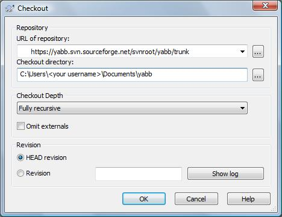

There are several ways you can access the current YaBB 3 code. Please remember that this code is not tested and should not be used on production boards.
SVN checkout
If you have a subversion client such as TortoiseSVN, you can directly checkout the code from Sourceforge using the SVN url <https://yabb.svn.sourceforge.net/svnroot/yabb/trunk>.
Online Viewer
If you don't want to download a subversion client, or just don't want to checkout the entire source tree, you can use SourceForge's Online SVN Browser.